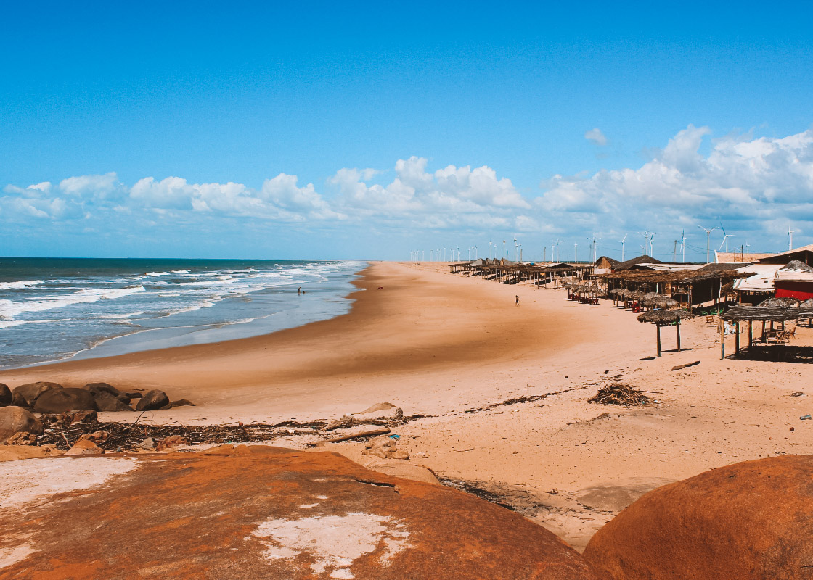

O Piauí é um estado do Nordeste brasileiro, conhecido por ser o menor litoral do Brasil, com uma faixa costeira curta, mas que abriga praias bonitas, como as de Luís Correia e Parnaíba. A capital do estado é Teresina, que fica mais no interior e é uma das poucas capitais nordestinas que não está na zona litorânea. O Piauí tem uma cultura rica, influenciada por tradições indígenas, africanas e portuguesas, com festas populares como o São João, que é bastante comemorado na região. A economia do estado é baseada principalmente na agricultura, com destaque para a produção de soja, milho e algodão, além da pecuária. O estado também é conhecido pelo Parque Nacional da Serra da Capivara, um importante sítio arqueológico com pinturas rupestres pré-históricas, que ajudam a contar a história dos primeiros habitantes das Américas. O Piauí tem um clima predominantemente semiárido no interior, com períodos de seca, mas oferece uma natureza rica e atrações turísticas interessantes.
